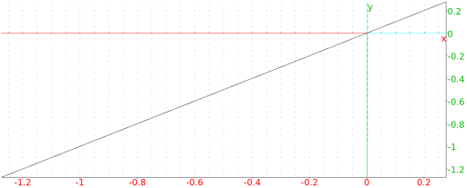

13.7.9 The altitude of a triangle: altitude
The altitude command finds the altitude line of a triangle.
-
altitude takes three arguments:
a,b,c, three points.
- altitude(a,b,c) returns and draws the altitude line
to the triangle with vertices a,b,c, through a and perpedicular
to the segment from b to c.
Example
Input:
altitude(0,1,i)
Output:
